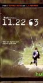

What is this site?
Stephen's Profile
Browser Extension
Stephen Klancher
Recent
Overall
Year Overview
Series
Lists
11.22.63
List contains: 8 items, 0.1 hours.
Seasons:
1
|
Title Search (4+ characters):
Group:
None
Example Group: Me and Stephen
Who's seen it:
No filter
Everyone
No One
Anyone
Anyone Has Not
Who's commented:
No filter
Everyone
No One
Anyone
Anyone Has Not
Netflix:
No Filter
Available for Instant Watch
Netflix Link Known
Netflix Link Unknown
Missing Data:
No Filter
Runtime
Season
Release Year (YYYY) or Decade (YYYx):
Sort:
Normal
Newest Episodes First
Episodes in Order
Recently Watched First
Watched in Order
Newest Releases First
Releases in Order
Stephen Klancher
...has seen 8
...has seen 0.1 hours
Timeline
Most Recent:
The Day in Question

Season 1
The Rabbit Hole (2016)
Airs on 2016-02-15
S1 - E1 of
11.22.63
Stephen Klancher
:
September 22, 2017
The Kill Floor (2016)
Airs on 2016-02-22
S1 - E2 of
11.22.63
Stephen Klancher
:
September 23, 2017
Other Voices, Other Rooms (2016)
Airs on 2016-02-29
S1 - E3 of
11.22.63
Stephen Klancher
:
September 24, 2017
The Eyes of Texas (2016)
Airs on 2016-03-07
S1 - E4 of
11.22.63
Stephen Klancher
:
September 25, 2017
The Truth (2016)
Airs on 2016-03-14
S1 - E5 of
11.22.63
Stephen Klancher
:
September 27, 2017
Happy Birthday, Lee Harvey Oswald (2016)
Airs on 2016-03-21
S1 - E6 of
11.22.63
Stephen Klancher
:
September 28, 2017
Soldier Boy (2016)
Airs on 2016-03-28
S1 - E7 of
11.22.63
Stephen Klancher
:
September 29, 2017
The Day in Question (2016)
Airs on 2016-04-04
S1 - E8 of
11.22.63
Stephen Klancher
:
September 29, 2017
Watched an episode not known by IMDb?
Season:
-
Episode:
Date:
Comment: